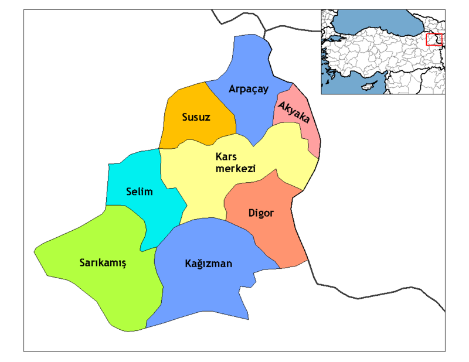

Kars'ın İlçeleri
Ülkemizin en doğusunda Ermenistan ile komşu olan Kars ilimiz çok eski kültürlere ev sahipliği yapmıştır. Uzun süren kışı ile birlikte kış sporlarına elverişli olan Sarıkamış Kış Turizm Merkezi pek çok etkinliği izleme olanağı sunmaktadır.
Kars ilinin merkez ilçesi ile birlikte 8 ilçesi bulunmaktadır. Kars ilinin ilçeleri şunlardır:;
AKYAKA
ARPAÇAY
DİGOR
KAĞIZMAN
MERKEZ
SARIKAMIŞ
SELİM
SUSUZ
İlçelerinden biri olan Kağızman ilçesi türkülere konu olması ile birlikte Kurtuluş Savaşı hikayeleri ile de ilgi odağı olmaktadır.
Kars'ın Nüfusu
Kars ilinin nüfusu 2020 yılının tahminlerine göre 284.221 kişidir. Bu veri eski yıllardaki nüfus artışına göre hesaplanmıştır. Yüz ölçümü 9.939 km2 olan Kars ilinin nüfus yoğunluğu ise 297/km2 olmaktadır. Kars ilinin geçmiş yıllara göre nüfusu şu şekilde açıklanmıştır.
2015 yılı Kars ilinin nüfusu 292.660 kişidir.
2016 yılı Kars ilinin nüfusu 289.786 kişidir.
2017 yılı Kars ilinin nüfusu 287.654 kişidir.
2018 yılı Kars ilinin nüfusu 288.878 kişidir.
2019 yılı Kars ilinin nüfusu 285.410 kişidir.
2019 yılı Kars ilinin nüfusu bir önceki yıla göre 3.468 azalmıştır. 2019 yılı Kars ilinin nüfusunun 146.668 kişisi erkek, 138.742 kişisi kadın nüfustan oluşmaktadır.
